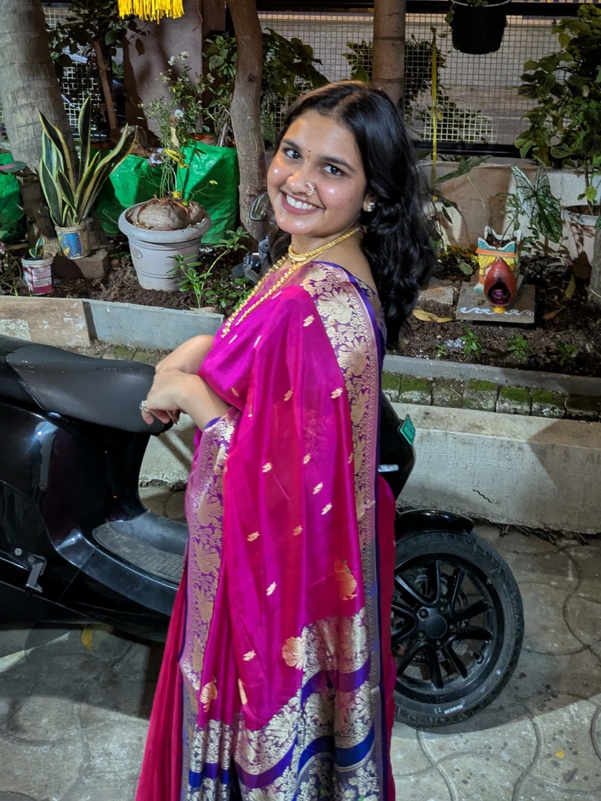
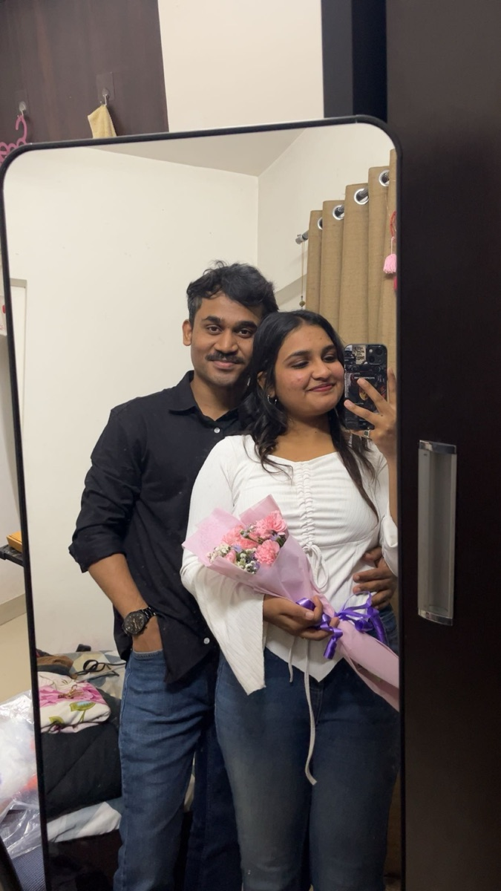

Calendar invitation
1:1 with Sloth Bear 🐻
Agenda: tell you you’re the best thing that ever happened at this office — and to my life. 💗
No other attendees. That’s rather the point.
Happy Girlfriend Day
We’re very good at keeping a secret.
We’re very bad at keeping a straight face.
↑ 5 lines redacted. Tap to declassify.
Filed under: how it started
Day one
You were a name on a seating chart. Just another colleague. Allegedly.
Week two
I started checking my watch — kab 12 baj rahe hai — just so I had a reason to glance at your desk. Purely coincidental, obviously.
Somewhere in between
Games, cafés, kisi bhi bahane. I stopped bothering with excuses to be wherever you were. We also stopped pretending. Mostly.
Today
In front of everyone else we’re still magnificent liars. To me you’re my favourite secret — and the worst-kept one I’ve got. 🐻💗
Notes I never left on your desk
For the record
who makes me happy. Not complicated, not conditional. Happy.
who’s smart, pretty, cute, hot, kind — and who gets my weirdness instead of tolerating it.
who makes me want to try things I would never otherwise have tried.
who notices what I do, and somehow makes me want to be better at it.
who makes me do things I wouldn’t do for anyone else. Not one person.


The part I don’t joke about
The one where you hold on a second longer than you need to. The way you smell. That smile you do without realising you’re doing it.
That’s the bit I carry home.